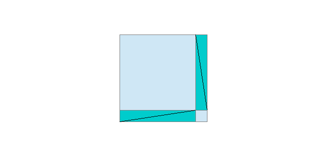
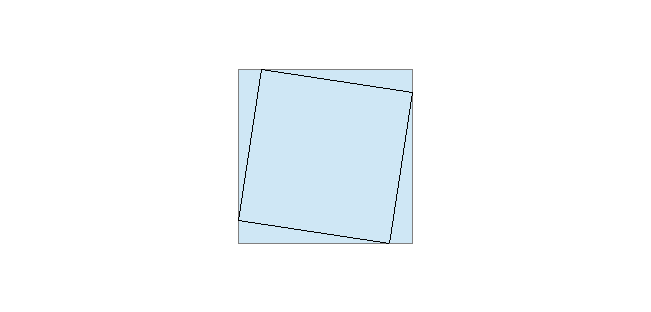

Centro San Domenico
Piazza San Domenico 12
40124 BOLOGNA
tel. 051 581718
http://www.csdricerca.com/
Bologna, 13 aprile 2018
Agli amici degli
Incontri Interdisciplinari
Carissimi,
ci rivedremo lunedì 23 aprile, alle ore 21, presso il Convento San Domenico, che ci ospiterà nella sua “sala del fuoco”, cui si accede da Via San Domenico 1.
Proseguiremo il dibattito su: “La modellizzazione matematica della natura e della materia: è sufficiente?” che la prof. Antonietta De Riso ha animato la volta scorsa sul tema:
“micro e macro cosmo”.
Un cordiale saluto e arrivederci a presto
fra Giovanni Bertuzzi O.P. fra Sergio Parenti O.P.
______________________________________
Breve resoconto dell'Incontro Interdisciplinare del 23 aprile 2018
a cura di fra Sergio Parenti O.P.
PARENTI – Ho sentito tanti discorsi sull'essere, sull'ente, sulla intuizione eidetica dell'essere. Russell, nella Storia della filosofia occidentale, preferisce gli argomenti di Tommaso d'Aquino a quelli di Rousseau, che dice di “vedere” Dio, perché gli argomenti di Tommaso li può controllare. Davanti a certi discorsi che sanno di misticismo, uno si domanda che cosa vogliano dire. San Paolo dice di aver avuto una esperienza, ma che non è possibile esprimere. Invece questi mi parlano di cose che loro in qualche modo “vedono”, ma io no. Che senso hanno quelle parole? Se mi si chiede di prender per vero quanto mi dicono sulla loro parola, mi devono anche permettere di controllare se sono degni di fede. Se dicono che posso controllare anch'io, voglio poter controllare e mi devono dire come fare: il metodo sperimentale si basa su questo. La mia domanda è quali siano i sistemi di controllo dei discorsi che abbiamo fatto la volta scorsa.
DE RISO – La nostra ragione ha dei limiti. L'innamoramento è un esempio. Abbiamo la possibilità di andare oltre a quello che è quantificabile. La razionalità è qualcosa di incanalato, anche nella quantità. La ragione, invece, ha un rapporto con dei limiti di cui si rende conto.
PARENTI – Tu contrapponi ragione e razionalità.
DE RISO – La razionalità vuol dire che cerco di spiegare tutto, non solo con un ragionamento, ma con un ragionamento che va anche nella quantità (posso controllare con termini matematici quantitativi).
PARENTI – Ennio De Giorgi ha presentato una fondazione della matematica che parte dalla qualità. La logica simbolica non c'entra con la quantità, anche se è stata identificata come logica matematica (ma i matematici che ho conosciuto non identificano la matematica con la logica).
DE RISO – Quando parlo di razionalità e non solo di ragione, coglio dire che utilizzo, per spiegare qualcosa, termini anche matematici e quantitativi ed anche la sperimentazione, vedendo che posso riprodurre ciò che studio. Se vado a misurare, sto canalizzando il ragionamento. Se non entro in questa canalizzazione, riconosco che la ragione ha dei limiti ed ha degli ambiti che non posso canalizzare, quantificare e ripetere.
PARENTI – Quando parli di quantificare non intendi la quantificazione logica (soggetto singolare, particolare o universale).
DE RISO – Per quantificare intendo ciò che posso verificare e sottomettere alla ragione facendo un passo ulteriore: utilizzo per spiegare anche termini quantitativi ed una sperimentazione per cui posso riprodurre ciò che studio.
PARENTI – Ma io posso riprodurre anche cose che non so misurare.
DE RISO – Se vado a misurare canalizzo la ragione. Se non entro in questa canalizzazione, il ragionamento riconosce che ha dei limiti e resta in ambiti aperti, che non posso quantificare, che non posso ripetere.
PARENTI – Per quantificazione intendi ciò che posso misurare? Dei numeri?
DE RISO – La razionalizzazione è quando posso numerare, riprodurre …
PARENTI – Non è la stessa cosa!
DE RISO – D'accordo! Ma qualcosa va oltre il solo ragionamento.
STIRPE – Vorrei una definizione di che cos'è ragione e che cos'è razionalità.
DE RISO – La ragione è legata ad una parte di noi: può richiedere una logica, l'osservazione di qualcosa che con la mente, con l'intelligenza, può strutturare. Ma se io in questa strutturazione includo un procedimento che sia di ripetizione o di utilizzo la quantità, o in qualche modo lo canalizzo, allora ho un sistema di razionalizzazione della cosa. Di fatto la differenza la posso trovare tra un Hegel ed i ragionamenti proposti da Socrate. C'è un abisso. In Hegel ho dei punti di riferimento fissi e tutto il ragionamento che faccio lo canalizzo, lo organizzo secondo i punti fissi. Alla fine arrivo ad andare anche contro quello che può essere un'umanità stessa. Se invece vado con la sola ragione e non prendo i punti fissi, devo tener presente anche un quid diverso: io posso avere dei limiti nel mio stesso modo di ragionare. Tengo aperto uno spiraglio e non posso arrivare alla conclusione unica.
PARENTI – La matematica in quanto tale non c'entra niente: potrebbe esserci in una macchina di Turing (quando pensiamo all'intelligenza artificiale), ma potrebbe non esserci come in Hegel, che trattava di ogni ente.
BERTUZZI – Mi viene in mente Bochénski, che scrisse un volumetto sull'essenza della filosofia moderna, dove partiva dall'idea di legge e diceva che la legge non è riducibile a dati che si collocano nello spazio e del tempo, perché è valida di per se stessa. Le leggi sono frutto dell'intelligenza dell'uomo che sa vedere il principio che regola un determinato fenomeno, ma non è riducibile al fenomeno stesso. Anche la logica studia delle leggi che valgono non sul piano quantitativo. Per lo stesso Russell la matematica non riguarda un oggetto materiale, ma è una scienza di relazioni, per cui logica e matematica sono le due facce della stessa medaglia. La logica studia le relazioni tra i concetti. In matematica se A=B e B=C, A=C: proprietà transitiva. Così nel sillogismo. Le relazioni trovano applicazioni anche nella realtà materiale, ma hanno una legalità, una necessità, che supera i rapporti fra enti materiali. Per “ragione” si intende usare la facoltà della intelligenza umana che ha bisogno, per capire le cose, di passare da un concetto all'altro: procede attraverso dei “ragionamenti”.
CAPECCHI – Sono molto vicino a questa posizione. Dirigo una rivista di modelli matematici per le scienze sociali. Abbiamo fatto un convegno su complessità e previsione. Dalle diverse discipline (linguistica, fisica quantistica, reti neurali, …) vengono proposti modelli. Però un modello, per quanto sia formalizzato e raffinato, non è mai la realtà, perché nella realtà c'è sempre qualche cosa che sfugge. Il modello non esaurisce la complessità della realtà. Un biologo diceva: “con i modelli riesco a capire quasi tutto, ma non capisco il mio modo di pensare”. Tra modello e realtà c'è la differenza che c'è tra una mappa ed il territorio. Inoltre la previsione è separata dalla spiegazione. Posso avere un modello che mi permette di prevedere una malattia come l'Alzheimer, senza però saper spiegare la malattia.
BERTUZZI – A proposito della distinzione tra previsione e spiegazione, padre Benanti spiegava che oggi la scienza si sta sviluppando sul piano statistico. Ci sono i mega-dati, che permettono una previsione statistica eccezionale di ciò che avverrà. Ma non viene spiegato perché avvenga. La causa non rientra nella competenza della statistica.
CAPECCHI – Ci sono due tipi di modelli. I modelli diacronici, di causa effetto, studiano le variabili dipendenti. Poi ci sono i modelli sincronici: hai tanti dati, li metti insieme, e ti chiedi che cosa colleghi questi dati. Hai, dal punto di vista filosofico, la differenza tra previsione e spiegazione; dall'altra parte hai le due categorie di modelli: quella diacronica è tipo causa-effetto e quella sincronica no. Jung diceva che la differenza tra un orientale ed un occidentale di fronte a ciò che arriva su una spiaggia è questa: l'occidentale dice che è tutto casuale; un orientale si domanderebbe: “Che cosa collega tutte queste cose?”. Detto questo, l'insieme della categoria dei modelli non va confusa con la realtà. I modelli, con le nuove tecnologie, possono diventare qualcosa che ti controlla: messi i dati, prevedi che uno sia un criminale e lo metti in galera in modo preventivo.
STIRPE – Torno ad un dilemma che da anni ho prospettato. Noi siamo fatti di molecole. O c'è qualcosa, chiamiamola anima, oppure le molecole seguono le loro leggi e non siamo liberi. Anche gli animali hanno una loro razionalità. Allora, se noi assumiamo di avere qualcosa di diverso, gli animali hanno una sotto-anima?
PARENTI – Nel 1200 circolava già la storia del “cane dialettico”: il cane insegue fiutando un cervo e arriva ad un trivio; il cane fiuta il primo e il secondo sentiero, non trova la traccia e imbocca senza fiutare il terzo sentiero. Dunque il cane ha ragionato. L'anima l'hanno tutti i viventi; l'uomo ha un'anima razionale; ce l'ha anche un cane? Se ben ricordo, le termiti riescono a mantenere una temperatura costante nel termitaio, indispensabile alla loro sopravvivenza, senza bisogno di petrolio. Mi dicono che noi abbiamo nel nostro corpo più batteri simbionti, indispensabili per vivere, che non cellule.
CAPECCHI – C'è un punto della Polinesia dove arrivano gli squali balena e le mante giganti. Per una settimana si trovano tutti insieme arrivando da diverse parti del mondo.
PARENTI – L'intelligenza degli animali non è mai stata messa in dubbio, ma non significa una intelligenza come l'ha l'uomo, bensì l'intelligenza di chi ha fatto la loro natura.
SCIRÈ – Si è parlato della differenza tra occidentali e orientali. Questa canalizzazione non mi dà risposte a proposito della realtà. Si è parlato all'inizio di misticismo, poi di anima, di sensibilità degli animali, di anima degli animali. Di fronte a queste categorie direi di non confondere la capacità di risolvere problemi concreti con quelli dell'anima e della spiritualità. Gli animali non hanno l'anima.
PARENTI – Parli di anima umana? L'anima l'ha ogni vivente, non l'anima umana. Tu segui la dottrina cartesiana che distingue res cogitans e res extensa, e intendi per anima uno spiritello. Ed al catechismo, a dispetto della dottrina della Chiesa, ti hanno presentato il corpo e l'anima come due cose distinte. Io intendo una cosa diversa per “anima”.
FRATTINI – La discussione è sempre caduta sui problemi di comprensione reciproca circa il linguaggio.
POGGIOLI – Abbiamo fatto un paragone, in classe, tra la filosofia occidentale e quella orientale. Come una patata privata della buccia è una polpa ricca, ma incapace di germogliare a differenza della buccia, così la filosofia occidentale, anche se ricca, resta ferma, mentre quella orientale pare essere capace di rigenerare la filosofia.
CRISMA – Non sono d'accordo con questa rappresentazione così dualistica. L'oriente non è indeterminato: l'India non è la Corea. Io studio la Cina pre-imperiale: ci sono tesi molto diverse, approcci molto differenti. Ci sono forme di razionalità analoghe a quelle occidentali ed altre strade.
CAPECCHI – Dicevo che per Jung in oriente c'è più sincronicità mentre in occidente più diacronicità. In realtà sia nella Cina antica, sia in quella moderna ci sono entrambi i modelli.
CRISMA – C'è un avversario di Confucio che gli contesta che si deve ragionare in termini di cause del disordine del mondo.
CAPECCHI – Non è praticamente possibile appiccicare un modello ad una cultura.
BERTUZZI – Il rapporto tra teoria e prassi, all'interno del pensiero occidentale, si è rovesciato con la modernità. Il pensiero antico privilegiava la contemplazione, quello moderno occidentale la prassi, e la tecnica contemporanea ne è la dimostrazione. Vorrei però riprendere il rapporto tra modello teorico e realtà. In logica si distingue l'aspetto formale da quello materiale. La logica moderna è sviluppo della logica formale, cioè lo studio dell'ordine tra i concetti che permette al ragionamento di essere coerente. La coerenza non spiega la realtà, ma è immanente all'ordine stabilito. La realtà ha una struttura, uno sviluppo che non è del tutto riducibile all'aspetto formale della logica. Questo è il punto. Aristotele è stato il più grande teorico della logica formale, ma la sua interpretazione della realtà è stata impostata più che sulla matematica sullo studio del vivente. Nel Medioevo Alberto Magno studiava i viventi, mentre Ruggero Bacone interpretava la realtà con oggetti matematici.
PARENTI – All'interno della matematica si può vedere la differenza tra l'aspetto formale, che coglie la coerenza, e l'aspetto reale. L'esempio più semplice che ho sentito è questo problema: “un mattone pesa 1 kg. più mezzo mattone. Quanto pesa il mattone?”. Uno dice di fare una equazione: è il modo algebrico di risolvere: x = 1 + 1/2x. Io so che l'uguaglianza resta invariata se aggiungo, sottraggo, moltiplico o divido per quantità uguali. Sottraggo 1/2x ad entrambi i membri e ho che 1/2x = 1; moltiplico entrambi i membri per 2 ed ho che x = 2. Oppure ragiono in un altro modo: due mezzi mattoni hanno uguale peso e il mattone pesa 2 mezzi mattoni; quindi 1 kg. è il peso di mezzo mattone e il mattone pesa 2 kg. Qual è la differenza tra i due modi? Quello che mi consta, quello che mi è evidente, quello che posso negare a parole ma so di mentire, nel primo caso è una stringa del linguaggio matematico che espone correttamente il problema per rapporto all'uguaglianza affermata. Sapendo le regole per cui l'uguaglianza resta invariata, ho trasformato la stringa di linguaggio in un'altra uguaglianza dove l'incognita compare da sola prima del segno di uguaglianza. L'evidenza si ferma alla coerenza della procedura: è tutto in regola. Attenzione! Quando io riconosco vera una cosa, se non lo faccio per l'evidenza di quella cosa, lo faccio perché sono io che adeguo il mio giudizio, per esempio a quanto mi dice un testimone oculare di cui mi fido. In questo caso ho un testimone più che garantito, cioè le regole dell'algebra, però l'assenso alla risposta lo do io, perché l'evidenza si ferma alla correttezza della procedura, alla coerenza. Nel secondo caso l'evidenza riguarda il mattone: se non è truccato, mezzo mattone pesa come l'altro mezzo mattone... Nel ragionamento dove tengo conto della realtà è la realtà evidente che mi obbliga all'assenso. Nell'altro caso l'obbligo all'assenso si ferma alla correttezza della procedura, dopo di che tu ti fidi, come ti fidi della tua calcolatrice, e dai l'assenso al risultato, che in se stesso non ti è evidente. Aristotele ha inventato la logica formale, ma non era per lui la logica più importante. Sono stati gli stoici a privilegiare la logica formale, seguiti poi dai medioevali fino ai giorni nostri, quando si è cercato di identificare la logica formale e la matematica. Gödel ha messo in crisi questo programma. Aristotele vedeva la scienza come il “sapere perché” certe cose hanno certe proprietà, che già si conoscono, ma solo per esperienza.
BERTUZZI – Se io dico che domani o ci sarà una guerra o non ci sarà, affermo un principio che non riguarda la realtà: da un punto di vista logico vale, ma non mi dice se ci sarà o meno in realtà.
RONCUZZI – Il teorema di Pitagora può essere dimostrato in modo analogo al problema del mattone. Costruisco due quadrati uguali e dentro ciascuno di essi metto quattro triangoli rettangoli uguali: se li togliessi, avrei da una parte il quadrato costruito sull'ipotenusa, dall'altra i due quadrati costruiti sui cateti: le superfici sono dunque uguali.
 
Per me il procedimento algebrico è figlio di questo argomento, che è quello di Pitagora.